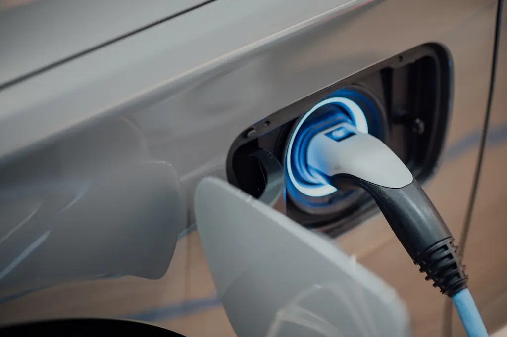

Elektrikli Araç Bataryalarının Geleceği: 2026 ve Sonrası
Elektrikli araç devrimi tüm hızıyla devam ediyor ve bu devriminin kalbi şüphesiz batarya teknolojisinde yatıyor. 2026 yılı ve sonrası, elektrikli araç bataryaları için dönüm noktası olacak. Peki, bizi nasıl bir gelecek bekliyor?
Bu yazıda, elektrikli araç bataryalarının geleceğini şekillendirecek yenilikçi teknolojileri, 2026'dan itibaren bizi bekleyen gelişmeleri ve elektrikli araçların performansını nasıl değiştireceğini detaylı bir şekilde inceleyeceğiz.
2026'dan sonra tek şarjla gidebileceğiniz mesafe
Yeni nesil katı hal bataryalarıyla mümkün
Günümüz Batarya Teknolojisi: Neredeyiz?
Günümüzde elektrikli araçların çoğunda lityum-iyon bataryalar kullanılıyor. Bu teknoloji, son 30 yılda büyük gelişme gösterse de, hala bazı sınırlamaları var:
⚡ Menzil Sınırlaması
Ortalama 300-500 km arası menzil
⏰ Şarj Süresi
Hızlı şarjda 30-60 dakika
💰 Yüksek Maliyet
Batarya maliyeti toplam fiyatın %30-40'ı
📉 Kapasite Kaybı
5-8 yılda %20-30 kapasite düşüşü
2026 ve Sonrası: Devrim Yaratan Teknolojiler
1. Katı Hal (Solid-State) Bataryalar
Sıvı elektrolit yerine katı elektrolit kullanılan yeni nesil bataryalar.
- %50 daha fazla enerji yoğunluğu
- 10 dakikada %80 şarj
- Daha güvenli (yanma riski yok)
- 20 yıl+ ömür
- 1000 km+ menzil
Piyasaya Çıkış: Toyota 2026, Mercedes 2028
2. Lityum-Sülfür Bataryalar
Kükürt kullanarak daha hafif ve ucuz bataryalar üretme teknolojisi.
- %70 daha hafif
- Maliyet %40 daha düşük
- Çevreye daha az zararlı
- 800 km+ menzil
- Daha sürdürülebilir
Piyasaya Çıkış: 2027-2028 arası
3. Grafen Bataryalar
Karbon bazlı grafen malzemesiyle ultra-hızlı şarj teknolojisi.
- 5 dakikada tam şarj
- Isınma sorunu yok
- Ultra uzun ömür
- %45 daha fazla kapasite
- Ekstrem sıcaklıklarda çalışır
Piyasaya Çıkış: 2028-2030 arası
4. Sodyum-İyon Bataryalar
Lityuma alternatif olarak daha ucuz ve bol bulunan sodyum kullanımı.
- %60 daha ucuz üretim
- Lityuma bağımlılık yok
- Düşük sıcaklıkta iyi performans
- Geri dönüşüm kolay
- Ekonomik araçlar için ideal
Piyasaya Çıkış: CATL 2026'da seri üretime başlıyor
Batarya Teknolojisi Yol Haritası
Mevcut Teknoloji Olgunlaşıyor
Lityum-iyon bataryalar optimize ediliyor. LFP (Lityum Demir Fosfat) bataryalar yaygınlaşıyor. 500-600 km menziller standart hale geliyor.
Katı Hal Bataryalar Başlıyor
Toyota ilk katı hal bataryalı aracını tanıtıyor. Sodyum-iyon bataryalar ekonomik araçlarda kullanılmaya başlıyor. Şarj süreleri 20 dakikaya iniyor.
Toplu Üretim Dönemi
Katı hal bataryalar yaygınlaşıyor. Lityum-sülfür teknolojisi ticarileşiyor. 800+ km menziller standart oluyor. Batarya maliyetleri %40 düşüyor.
Yeni Nesil Teknolojiler
Grafen bataryalar piyasaya giriyor. 1000+ km menziller yaygınlaşıyor. 5-10 dakikalık şarj süreleri mümkün. Elektrikli araçlar içten yanmalılardan ucuzlaşıyor.
Batarya Devrimi Tamamlanıyor
Elektrikli araçlar her açıdan içten yanmalıları geçiyor. Kablosuz şarj altyapısı yaygınlaşıyor. Geri dönüşüm teknolojileri olgunlaşıyor.
Batarya Teknolojileri Karşılaştırması
| Özellik | Lityum-İyon (Şu An) | Katı Hal (2026+) | Grafen (2028+) |
|---|---|---|---|
| Menzil | 300-500 km | 800-1000+ km | 1000+ km |
| Şarj Süresi | 30-60 dakika | 10-15 dakika | 5-10 dakika |
| Ömür | 8-10 yıl | 15-20 yıl | 20+ yıl |
| Güvenlik | Orta (yanma riski) | Yüksek | Çok Yüksek |
| Maliyet (kWh) | $120-150 | $80-100 | $60-80 |
| Ağırlık | Standart | %30 daha hafif | %50 daha hafif |
Yeni Nesil Bataryaların Avantajları
1. Menzil Endişesi Ortadan Kalkıyor
Katı hal ve grafen bataryalarla 1000 km+ menziller, elektrikli araçları içten yanmalılarla rekabet edebilir hale getiriyor. Artık uzun yolculuklarda endişelenmenize gerek kalmayacak.
2. Şarj Süresi Benzin Doldurmakla Eşit
5-15 dakikalık şarj süreleri, elektrikli araçların en büyük dezavantajını ortadan kaldırıyor. Bir kahve molası sırasında aracınızı tam şarj edebileceksiniz.
3. Fiyatlar Düşüyor
Batarya maliyetlerinin düşmesiyle elektrikli araçlar 2028'den itibaren içten yanmalı araçlardan daha ucuz olacak. Bu, kitlesel adaptasyonu hızlandıracak.
4. Çevre Dostu Üretim
Yeni nesil bataryalar, kobalt gibi nadir elementlere daha az bağımlı. Sodyum-iyon ve lityum-sülfür bataryalar, daha sürdürülebilir ve geri dönüştürülebilir malzemeler kullanıyor.
5. Güvenlik Artıyor
Katı hal bataryalarda sıvı elektrolit olmadığı için yangın ve patlama riski neredeyse sıfır. Bu, elektrikli araçları daha güvenli hale getiriyor.
Karşılaşılacak Zorluklar
🏭 Üretim Ölçeklendirmesi
Yeni teknolojilerin seri üretime geçmesi zaman alacak. İlk yıllarda üretim kapasitesi sınırlı olacak.
⚡ Şarj Altyapısı
Ultra-hızlı şarj istasyonları için güçlü elektrik altyapısı gerekiyor. Bu, büyük yatırımlar gerektiriyor.
♻️ Geri Dönüşüm
Eski bataryaların geri dönüşümü için yeni sistemler geliştirilmesi gerekiyor.
📋 Standartlaşma
Farklı batarya teknolojileri için ortak standartlar belirlenmelidir.
Sonuç: Elektrikli Geleceğe Hazır mıyız?
2026 ve sonrası, elektrikli araç bataryaları için altın çağ olacak. Katı hal, lityum-sülfür ve grafen teknolojileri, elektrikli araçları her açıdan içten yanmalı araçların önüne geçirecek.
Elektrikli araçların içten yanmalılardan ucuz olacağı yıl
Menzil endişesi, uzun şarj süreleri ve yüksek fiyatlar gibi bugünün sorunları geçmişte kalacak. Elektrikli araçlar, sadece çevre dostu bir alternatif olmaktan çıkıp, her açıdan üstün teknoloji haline gelecek.
Türkiye'de de bu dönüşüme hazırlık yapılıyor. Togg gibi yerli markalar, bu yeni teknolojileri yakından takip ediyor ve gelecek nesil batarya teknolojilerine yatırım yapıyor.
Siz hazır mısınız? Elektrikli araç devriminin bu heyecan verici dönüşümünü birlikte takip etmeye devam edeceğiz!
Bu teknolojiler hakkında ne düşünüyorsunuz? Hangi batarya teknolojisinin kazanacağını düşünüyorsunuz?